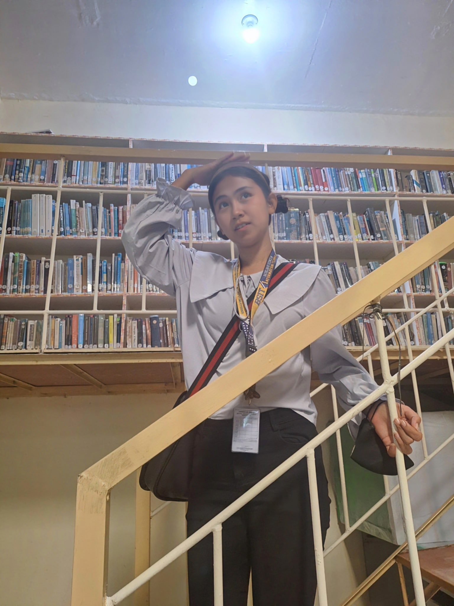

In collaboration with the National Commission for Culture and the Arts (NCAA) and Northern... Read more...
Northern Iloilo State University (NISU)—Main Campus showed support to the 106th Founding... Read more...
NISU collaborates with FilPas and SeeMeSol; Expanding digital transformation and career opportunities for graduates Northern Iloilo State University... Read more...
NISU continues to open tracks for the Intercampus Sports Meet 2024, fosters a spirit of camaraderie Now on its third day, this year’s Northern... Read more...
Lin-ay sang Iloilo'24 graces president's office in a courtesy call Newly crowned Lin-ay sang Iloilo 2024 paid a courtesy visit to the university... Read more...
Northern Iloilo State University (NISU) stands as a beacon of educational excellence in the Iloilo region. Committed to holistic development, we strive to provide world-class education that empowers students to become global citizens and catalysts of change.
Our Vision: A globally competitive State University in Asia.
Our Mission:Human resources development through quality and relevant education, environment-friendly modern technologies and preservation of Filipino values and culture for sustainable and improved quality of life..
For more information about NISU, visit their official website: NISU Official Website.